Process制作過程
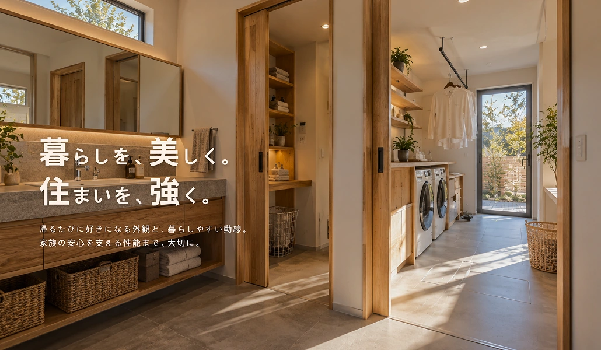
01 | プロジェクト概要
つむぎ工務店の特徴
つむぎ工務店は、デザイン性・住宅性能・暮らしやすい動線設計を大切にする、架空の工務店です。
見た目の美しさと快適で安心できる性能に加え、家事や日々の移動がスムーズになる間取りを考え、家族が心地よく暮らせる住まいを提案しています。
制作内容
架空の工務店「つむぎ工務店」のコーポレートサイトを制作。
来場予約につなげることを目的に、情報設計からデザイン、実装まで行いました。
02 | 目的・想定される課題
目的
完成見学会の来場予約へ繋げる。
想定される課題
- 住宅の写真だけでは、暮らしやすさや性能まで判断しにくい。
- 子供連れで参加できるか。無理な営業はされないか。
- 来場予約のハードルが高くないか。
03 | ターゲット
ペルソナ（想定）
- 【暮らし】
- 現在、夫（34歳）、長女（3歳）と2LDKの賃貸マンションで3人暮らし。一般企業の事務職に時短勤務として勤務しており、夫婦共働き。平日は仕事・保育園の送迎・家事に追われ、休日は家族で過ごす時間を大切にしている。注文住宅を検討し始め、SNSで住まいの情報収集をし、複数の工務店の施工事例や特徴を比較している。
- 【求めること】
- おしゃれなデザインの家に憧れるけれど、毎日暮らす場所だから、快適さも安全性も妥協したくない。
- 【不安要素】
- 好みのデザインの家でも、実際に暮らしやすいか判断がしにくい。安全性も重視したいが、どの水準を重視すればよいか分からない。見学に行くと、強く営業されないか。
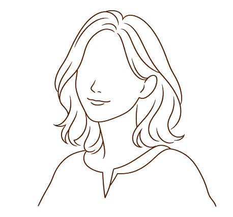
04 | ユーザーフロー
ユーザーの検討段階に応じた心理と行動を想定し、興味喚起から信頼形成、来場予約へとつながる情報設計を行った。
- 01
セクションTOPユーザー心理どんな工務店？
雰囲気が知りたい。ユーザーの行動サイトを訪問し、全体の雰囲気を確認する。 - 02
セクションCONCEPT/
PERFORMANCEユーザー心理どんな家が建てられる？
性能やこだわりを知りたい。ユーザーの行動コンセプトや住宅性能などの特徴を知る。 - 03
セクションWORKSユーザー心理実際の家のイメージを見たい。ユーザーの行動施工事例を見て、実際の暮らしを具体的にする。
- 04
セクションVOICEユーザー心理実際に建てた人の感想を知りたい。信頼できる？ユーザーの行動安心感を得る。
- 05
セクションEVENTユーザー心理見学会に参加して、実際に見てみたい。ユーザーの行動参加したい見学会を検討する。
- 06
セクション来場予約ユーザー心理見学会に参加したい！ユーザーの行動フォームから必要事項を入力し、来場予約する。
05 | サイトマップ
見学会・予約へ直接アクセス
TOPトップページ
- FVメインビジュアル
- CONCEPT私たちの家づくり
- WORKS施工事例01・02・03
- PERFORMANCE耐震・断熱・省エネ性能
- VOICEお客様の声
- EVENT見学会へのご案内
WORKS施工事例詳細ページ | 01
- 住宅の概要家作りの背景
- POINT回遊キッチン・洗濯動線・LDK
- EVENT見学会へのご案内
EVENT見学会・予約ページ
- 完成見学会の概要見学内容・開催日時・場所
- ご来場にあたって不安要素の解消
- RESERVARTION見学会予約フォーム
家づくりへの理解から、見学会予約へつなぐ情報設計
TOPで家づくりの特徴や性能、お客様の声を伝え、施工事例詳細で具体的な暮らしをイメージできる構成に。見学会ページでは、開催概要や来場時の不安に応える情報と予約フォームをまとめている。
また、予約を決めている方は、共通ヘッダーからフォームへ直接進める設計。
06 | ワイヤーフレームとデザインへの反映
① FV
ワイヤーフレーム
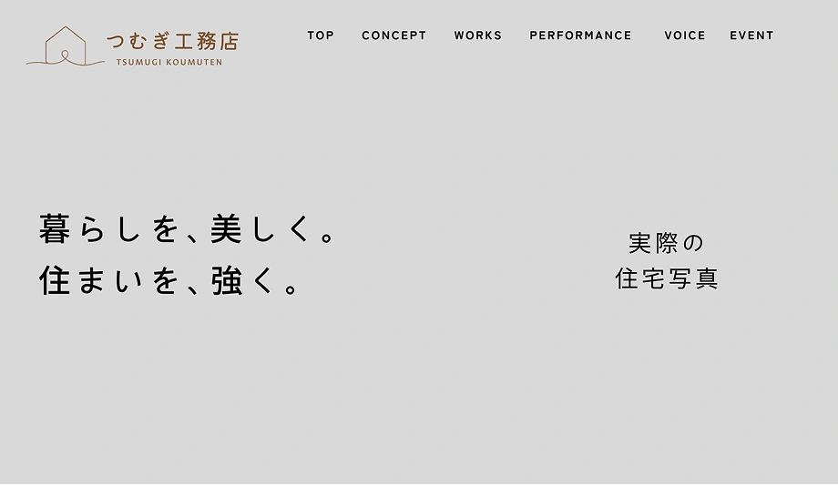
完成デザイン
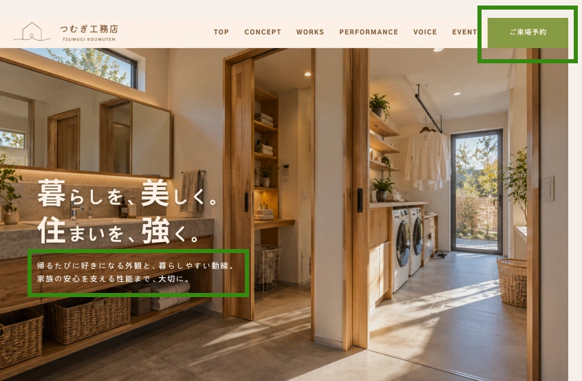
設計意図
どんな工務店なのか、FVのキャッチと実際の住宅を見て判断できるようにする。
変更点・理由
キャッチのみではどんな工務店なのかが曖昧だったため、メインキャッチを補足するサブキャッチを添えた。
また、ページ下部（EVENT）にしかなかった来場予約ボタンをヘッダー部にも設置することで、サイト内のどのページを閲覧していても、来場予約ボタンを押せるようにした。（ヘッダーが追従するように実装。）
② CONCEPT
ワイヤーフレーム
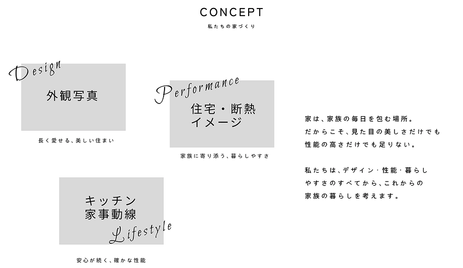
完成デザイン
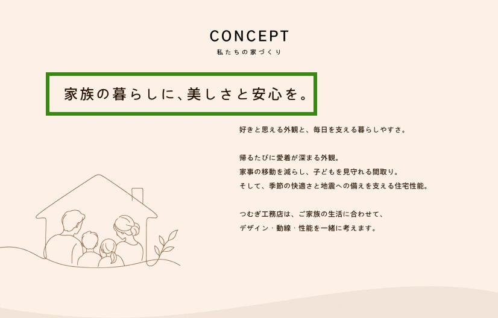
設計意図
FVで興味を持ったユーザーに対し、つむぎ工務店の特徴を3つに整理して提示。競合との違いを短時間で理解できるようにする。
変更点・理由
FV閲覧後、どんな工務店なのかを伝えたかったが、突然説明が長々とあり、ユーザーに工務店の魅力を瞬時に伝えられないため、説明より先にブランドの思想を短く言い切る一言を大きく添えた。
ここでは写真を無くし、シンプルに。
③ WORKS
ワイヤーフレーム
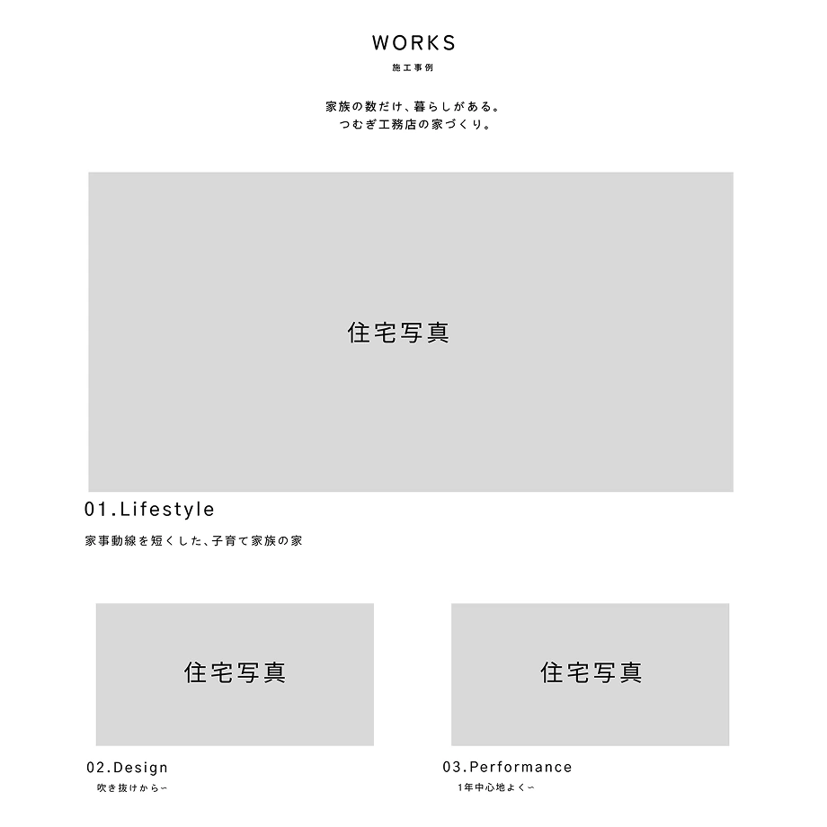
完成デザイン
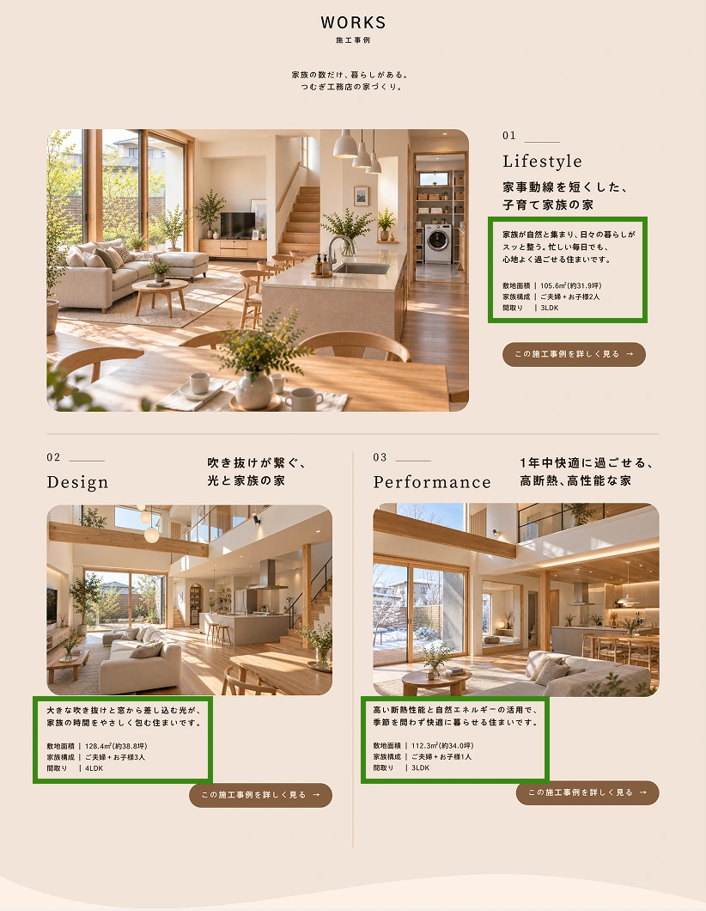
設計意図
自分の理想に合った家を建てられるのか不安なユーザーへ、実際の施工事例を提示することで理想的な暮らしを具体的にイメージしてもらいたい。
また、工務店の特徴を実際に写真で見てもらうことで、納得してもらいたい。
変更点・理由
写真だけでは伝わりにくい暮らしの特徴を補うため、各事例に説明文と家族構成等の情報を追加。
自分たちの暮らしと照らし合わせながら、住まいを具体的にイメージできる形に設計した。
④ PERFORMANCE
ワイヤーフレーム
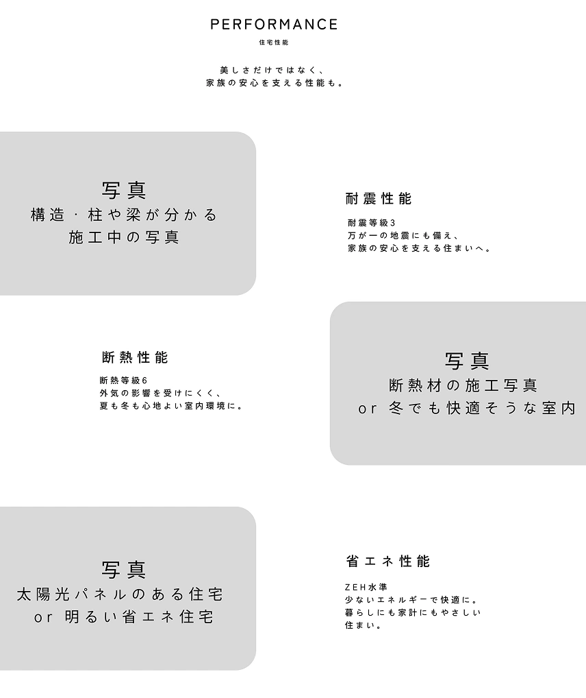
完成デザイン
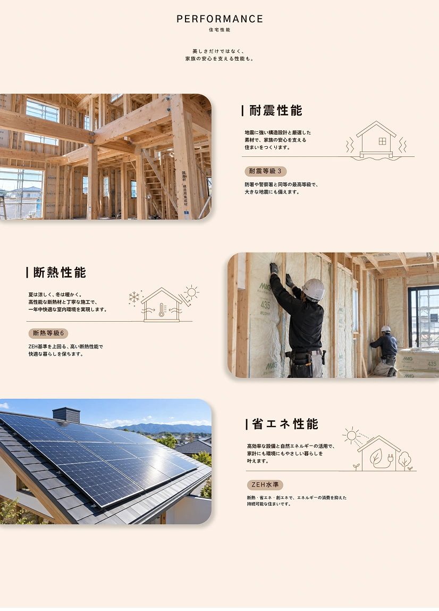
設計意図
理性的なセクションとなるよう、数字やスペックを用いてシンプルなデザインになるよう設計した。
実際の施工や住宅の様子を視覚的に確認できることが安心感につながると考え、写真を用いた構成へ。
スペックを記載することで、より信頼性や安心感をユーザーに持ってもらう。
変更点・理由
各性能の特徴を直感的に理解できるよう、写真に加えてイラストを配置した。また、専門用語や等級だけでは伝わりにくい性能の価値を、暮らしのメリットと結びつけて説明。住宅性能に詳しくない方にも、自分たちの生活にどう役立つのかをイメージしやすい構成にした。
⑤ VOICE
ワイヤーフレーム
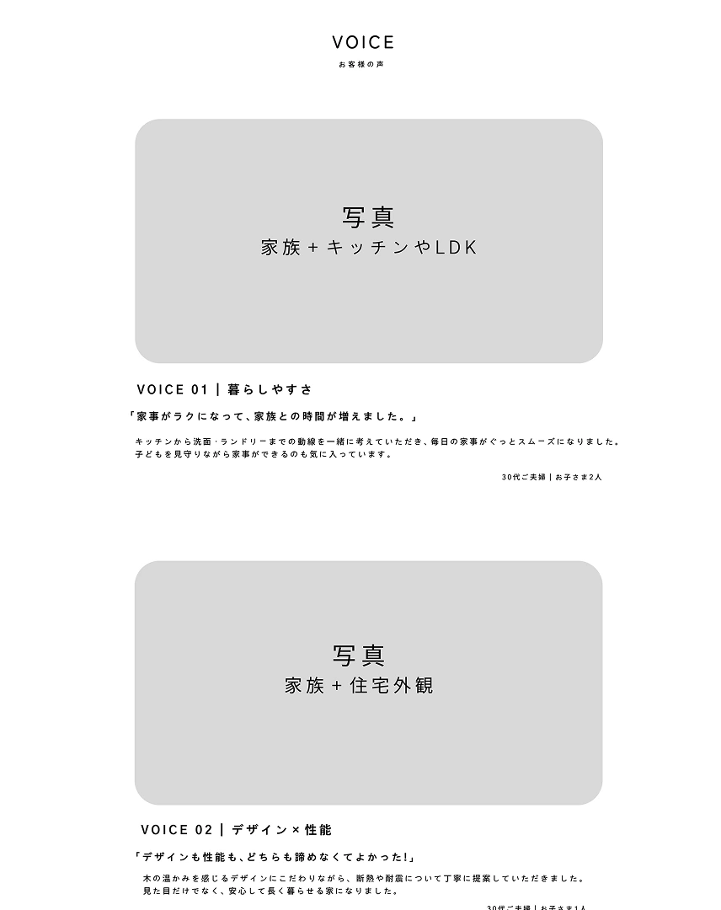
完成デザイン
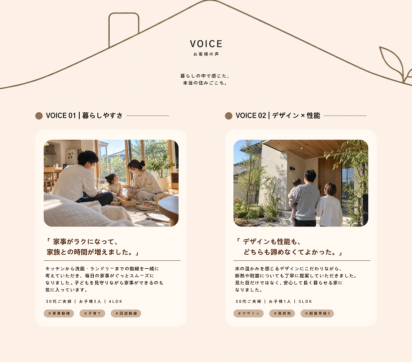
設計意図
来場予約前のユーザーに対し、ターゲットと近い家族構成の施主の声を掲載。設定した「暮らしやすさ」「デザインと性能の両立」という不安を第三者の体験によって解消する。
変更点・理由
各性能説明のセクションから一気に雰囲気を変え、親しみやすさや親近感をユーザーに感じさせるため実際の家族の写真を載せた。口コミ部分はラフなカード風にし、横並びに配置することで視覚的に見やすくなるよう設計した。
⑥ EVENT
ワイヤーフレーム
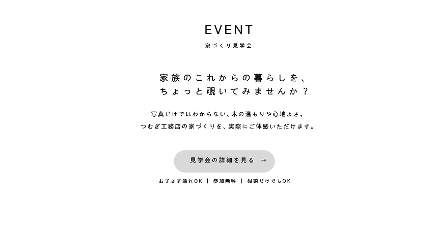
完成デザイン
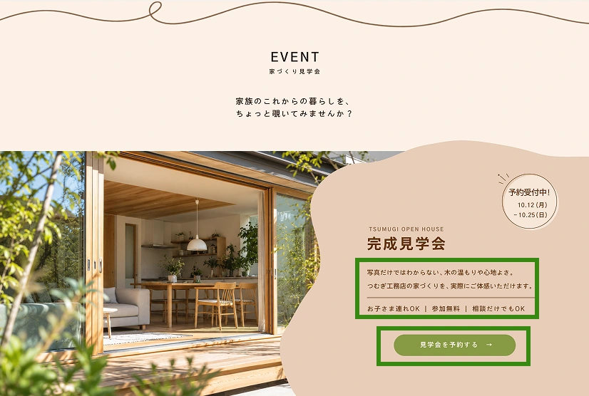
設計意図
「来場予約」という直接的な表現による心理的ハードルを下げるため、見学を「EVENT」として提示。また、CTA付近に安心材料を明示することで、検討初期のユーザーでも気軽に参加を検討できる導線を設計した。
変更点・理由
見学会に行くことで得られるものと安心材料をCTA上に設け、「見学会の詳細を見る→」ではなく「見学会を予約する→」とユーザーが次に行う行動を具体的に提示し、ゴールを明確にすることで、ユーザーが迷うことなくスムーズにCTAに誘導できる設計にした。
07 | デザインのポイント
① 配色
木の温もりや家族のあたたかさを感じられるよう、ブラウン系を基調に配色。
来場予約につながるCTAにはグリーンを使い、他のボタンと区別することで、次の行動につながる導線を見つけやすく。
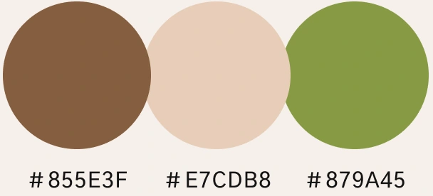
② あしらい
家族の暮らしに寄り添う工務店の親しみやすさを表現するため、なめらかな曲線の線画を取り入れた。細い線で軽やかに描くことで、住宅写真を引き立てながら、サイト全体にやわらかさと温もりを添えている。
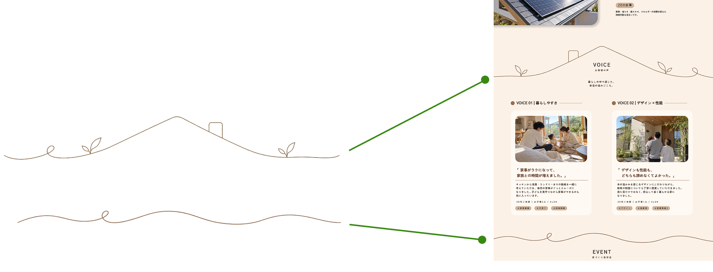